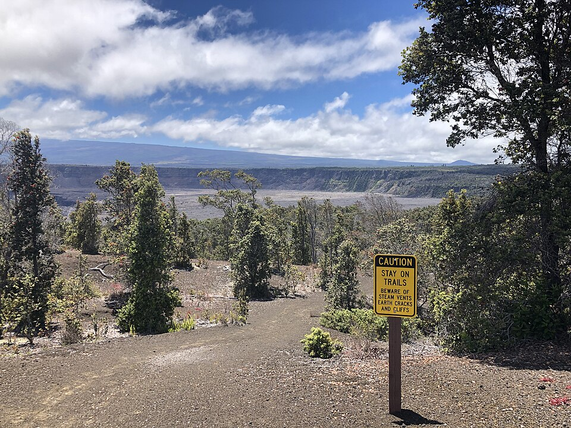

Uēaloha (Byron's Ledge) Trail
Place: Uēaloha (Byron's Ledge) Trail, Hawaiʻi Volcanoes National Park, Hawaiʻi Island
Type: Scenic hiking trail and caldera overlook
Namesake: Traditionally known as Uēaloha ("wailing of love"); the English name honors Lord George Anson Byron, commander of HMS Blonde
Story it tells: How an ancient Hawaiian place name, a British diplomatic expedition, and one of Kīlauea's most spectacular viewpoints became intertwined along the rim of Hawaiʻi's most active volcano.

Uēaloha, also known as Byron's Ledge Trail, follows a narrow ridge between Kīlauea Caldera and Kīlauea Iki in Hawaiʻi Volcanoes National Park. The roughly 1.1-mile trail passes through native rainforest before opening to broad views across the volcanic landscape. The trail forms an important link within the park's hiking network. From Uēaloha, hikers can continue toward the Kīlauea Iki Trail and Nāhuku, or approach the ridge from the Halemaʻumaʻu Trail near Volcano House.
The trail carries two names, each preserving a different history. The traditional Hawaiian name Uēaloha combines uē, meaning to cry, weep, or wail, with aloha, meaning love, affection, or compassion. The name evokes emotional parting, longing, and the deep relationships embedded within the landscape of Kīlauea.
Hawaiian traditions connect the summit region with deities Pele, her sister Hiʻiaka, Kamapuaʻa. Uēaloha is connected with the turbulent relationship between Pele and Kamapuaʻa, whose battles joined fire and rain across the island. Their eventual separation divided the wetter windward lands from the drier regions shaped by Pele's volcanic power, leaving the ridge as a place associated with sorrow, love, and departure.
The English name, Byron's Ledge, honors Lord George Anson Byron, a British naval commander and cousin of the poet commonly known as Lord Byron. His voyage began with the deaths of King Kamehameha II, also known as Liholiho, and Queen Kamāmalu during their 1824 state visit to Great Britain.
The king and queen contracted measles in London and died within days of one another. Their loss created both a diplomatic crisis and a period of profound mourning in Hawaiʻi. The British government assigned Lord Byron and sent the HMS Blonde to return the royal couple's remains with the dignity expected of sovereign rulers.
When HMS Blonde arrived in Honolulu in May 1825, the return of the monarchs was met with widespread grief. Chiefs and members of the public gathered in mourning, and traditional wailing echoed across the harbor. Lord Byron and his officers joined Hawaiian leaders in the funeral ceremonies, while the British mission was received as a gesture of international respect toward the Hawaiian Kingdom.
Because the voyage had been organized quickly, the expedition also included surveyors, artists, and naturalists. After completing its central diplomatic responsibility, members of the crew traveled through the islands to record geography, plants, animals, volcanic activity, and aspects of Hawaiian society. The voyage became one of the most significant early British scientific expeditions in Hawaiʻi.
In June 1825, Byron, members of his crew, naturalists, and Hawaiian guides traveled from Hilo toward Kīlauea. They established temporary shelters near the summit and remained for several days. Their journals described the crater's glow, sound, smoke, and moving lava with awe. They noted that their Hawaiian guides displayed reverence toward Pele by offering ʻōhelo berries to the deity.
Lieutenant Charles Robert Malden, the expedition's surveying officer, produced maps of Kīlauea and the surrounding area. The flat-topped ridge where the party camped and observed the crater became identified on Western maps as Byron's Ledge. The English name remained dominant in guidebooks, maps, and park literature for almost two hundred years.
The published account, Voyage of H.M.S. Blonde to the Sandwich Islands, helped introduce British and American readers to Kīlauea. Its descriptions contributed to the volcano's growing international reputation as a destination for scientists, artists, adventurers, and travelers.
For nearly two centuries, the name Byron's Ledge overshadowed Uēaloha in written records. In more recent years, Hawaiʻi Volcanoes National Park has worked with Native Hawaiian cultural practitioners to restore traditional names across the park. Signs, maps, and interpretive materials increasingly place Uēaloha beside Byron's Ledge, just as the name Nāhuku has returned alongside the better-known Thurston Lava Tube.
The paired name does not simply replace one history with another. Instead, it reveals the layers carried by the ridge. Uēaloha connects the place to Hawaiian language, emotion, and the sacred traditions of Kīlauea. Byron's Ledge recalls the return of a Hawaiian king and queen, a British diplomatic mission, and an early scientific expedition that changed how the volcano was represented to the outside world.
Today, hikers experience those histories while moving between rainforest and crater. The trail provides dramatic views, but its deeper significance lies in how the landscape has been understood, named, mapped, and remembered.